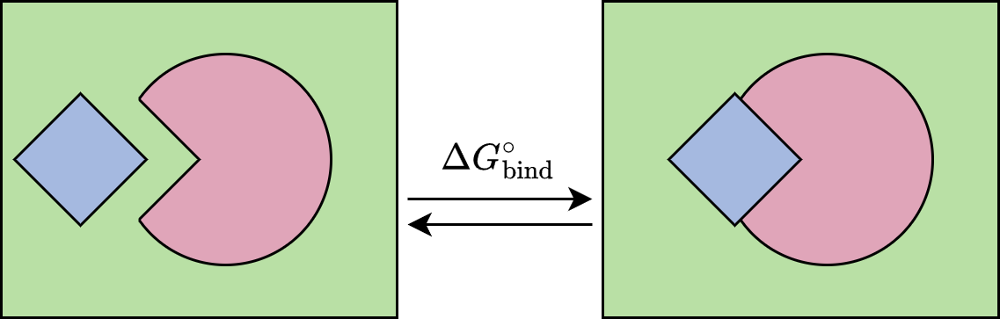
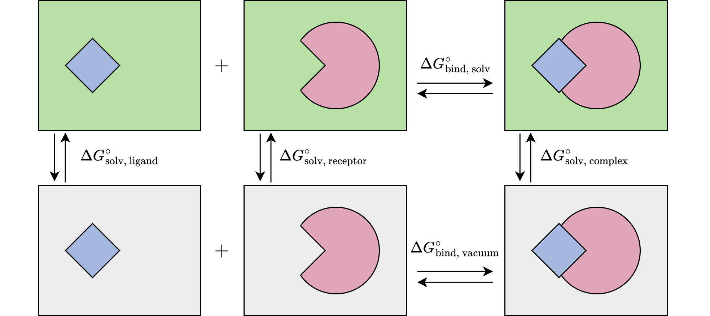

Methods: Binding Free Energy Calculation#
1. Binding Free Energy Decomposition#
The Binding Free Energy (BFE) of a complex is determined by the change in enthalpy (\(\Delta H\)) and entropy (\(\Delta S\)) at a given temperature (\(T\)):

In a computational framework, \(\Delta G_{\text{bind}}\) is estimated using a thermodynamic cycle that relates the vacuum binding energy to the solvation free energies of the complex, receptor, and ligand:

The solvation term (\(\Delta G_{\text{solv}}^{\circ}\)) is split into polar and non-polar components, while the vacuum term accounts for molecular mechanics energy (\(\Delta E_{\text{MM}}\)) and configurational entropy (\((T\Delta S)^*\)):
\(\Delta G_{\text{solv}}^{\circ} = \Delta G_{\text{polar}}^{\circ} + \Delta G_{\text{non-polar}}^{\circ}\)
\(\Delta G_{\text{vacuum}}^{\circ} = \Delta E_{\text{MM}} - (T\Delta S)^*\)
2. MM/PB(GB)SA Framework#
The MM/PB(GB)SA approach is an all-atom end-point method. It calculates the average BFE over a set of uncorrelated snapshots extracted from a Molecular Dynamics (MD) simulation trajectory.
This study utilizes a single-trajectory protocol, where the average BFE is determined by:

Solvation Free Energy Components#
Polar Component: Calculated using either the Poisson-Boltzmann (PB) method (a grid-based numerical solution) or the Generalized Born (GB) model (an analytical approximation). While PB is often more accurate, GB models (like GB5 and GBNSR6/GB66) are preferred for large systems due to computational efficiency.
Non-Polar Component: Estimated based on the Solvent-Accessible Surface Area (SASA): \(\Delta G_{\text{nonpolar}} = \gamma * SASA\).
Entropy: Omitted in this study. Localized single-residue mutations typically result in minimal entropic changes compared to the significant enthalpic contributions observed in Deep Mutational Scanning (DMS).
3. Gas-Phase Energy and Atomic Radii#
Force Field: Calculations use ff19SB in AMBER23, optimized for the OPC water model.
Atomic Radii: Implicit solvent predictions are highly sensitive to the Dielectric Boundary. We evaluate three sets: Mbondi2, OPT1 (optimized for polar \(\Delta \Delta G\)), and OPT5D (optimized for both solvation and binding errors).